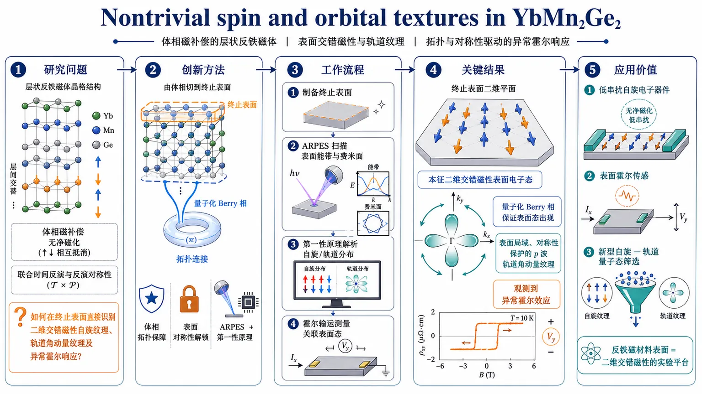
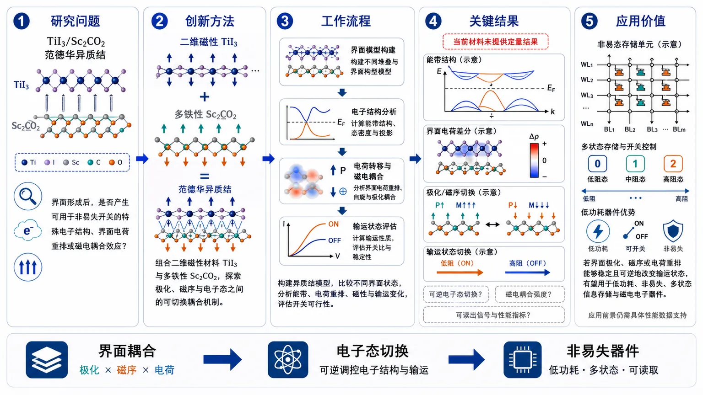
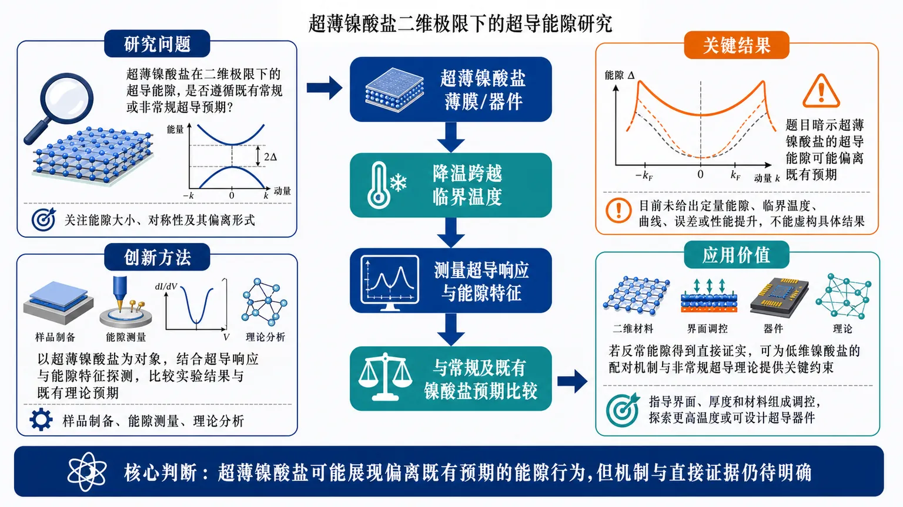
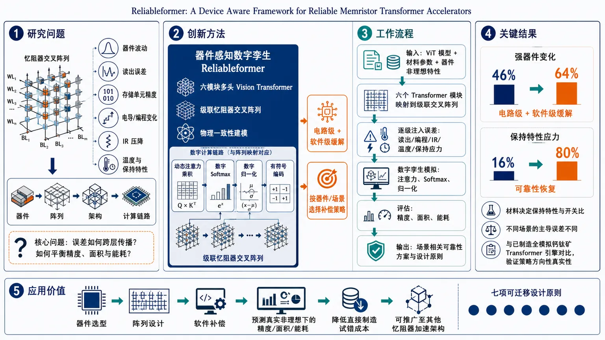
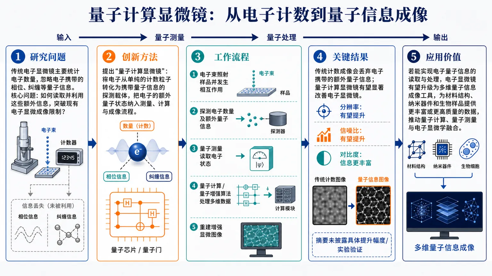
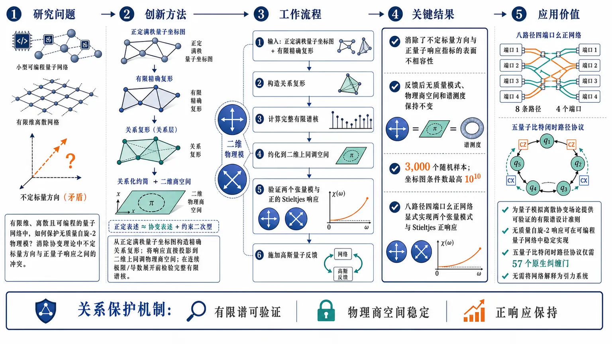

AI × Science 文献日报 2026/08/23
聚焦 AI × 物理 / 化学 / 材料交叉方向，自动过滤明显偏题的医学、教育与社会科学内容，并按主题重新排版，便于快速深读。
AI | 物理 | 化学 | 材料 | 交叉学科
📊 今日概览
原始候选 10 篇中，已剔除 0 篇明显偏离主线的内容，并从剩余 10 篇主线相关文献中精选 9 篇进入日报页，优先保留 AI × 物理 / 化学 / 材料交叉与关键计算方法工作。
核心关注（ML × ferro / 凝聚态）
2 篇本日两篇文献没有给出可核验的 NbOI2、CrI3、CrSBr 或 BaTiO3 新材料结果，也没有报告 equivariant GNN、MACE、NEP 或 DFT+U 的具体计算数据。TiI3/Sc2CO2 论文仅显示研究对象和非易失开关主题，材料磁序、界面极化、电荷转移、带隙及开关能垒均未披露。Reliableformer 的实质进展在器件感知建模：把六模块多头视觉 Transformer 映射到级联忆阻器交叉阵列，并用流片前数字孪生传播非理想性。因缺少基线精度、器件参数、能耗和误差幅度，当前不能判断其相对 MACE、NEP 势能或 DFT+U 材料建模的定量推进。
-
01二维TiI3/Sc2CO2多铁异质结的界面电子性质与非易失开关The interfacial electronic properties of two-dimensional TiI 3 /Sc 2 CO 2 multiferroic heterojunctions for nonvolatile switching
📄 摘要：该工作研究了用于非易失性切换的二维TiI3/Sc2CO2多铁异质结的界面电子性质。原始信息未提供论文摘要，具体研究方法、计算结果和结论需查阅原文。
💡 亮点：研究对象是二维TiI3/Sc2CO2多铁异质结，核心问题是界面电子结构能否支持非易失切换。现有材料没有给出计算方法、层间堆垛、极化翻转路径、磁电耦合量或器件读写窗口。它与团队的二维滑移铁电、范德华磁体和界面电荷转移方向高度相关，但任何定量结论都必须等待完整摘要或正文。
📐 方法要点：现有记录只提供题目、期刊来源和在线日期，没有摘要正文或方法部分，因此不能确认论文是否采用 DFT、DFT+U、含自旋轨道耦合计算、界面结构弛豫、能带对齐、差分电荷密度或势垒计算。可核验的方法输入目前仅包括 TiI3/Sc2CO2 异质结及其可能的极化或磁性构型，层间距、堆垛方式、交换关联泛函、截断能、磁矩约束、超胞和收敛阈值均缺失，不能把任何具体计算路线归于该文。
🔗 相关工作关联：研究对象可与 CrI3、CrSBr 等二维磁性材料和 BaTiO3、NbOI2 等铁电体系的界面调控工作相联系，但现有信息不足以判断 TiI3 是否保持特定磁序、Sc2CO2 是否提供可翻转极化，或开关是否由电荷转移、交换耦合和肖特基势垒共同控制。若与团队五位研究人员的已有方向对照，只能确认需要分别核对其二维磁性、铁电界面、DFT+U、MACE/NEP 势能和数据驱动筛选工作；用户未提供五人的姓名或研究分工，不能虚构对应关系。
💡 对你方向的启示：可先建立 TiI3/Sc2CO2 的可复现实验矩阵：枚举高对称堆垛、层间距和两种铁电极化，使用含自旋轨道耦合的 DFT+U 计算结构、磁序、带隙、功函数、差分电荷和界面势垒，并以反向极化后的能量差和 NEB 开关路径评估非易失性。随后用少量高精度构型训练含自旋和局域环境描述的 MACE 或 NEP，验证能量、力、磁矩及势垒误差，再以扫描隧穿谱、光学带隙或栅压翻转实验交叉验证；五位成员的具体任务需依据其真实分工分配。
-
02可靠变换器：面向器件的可靠忆阻器变换器加速器Reliableformer: A Device Aware Framework for Reliable Memristor Transformer Accelerators
📄 摘要：Transformer网络驱动着现代人工智能，但在数据中心规模下，其能源和冷却需求限制了可持续部署。忆阻器交叉阵列上的模拟存内计算有望实现数量级的节能，但也会使计算暴露于降低准确率的器件非理想因素之中。由于制造成本高昂，经过流片前校准且具有物理一致性的数字孪生模型能够降低设计风险。Reliableformer是一种器件感知框架，它将一个六模块、多头的CIFAR-10视觉Transformer映射到级联忆阻器交叉阵列注意力数据通路，并将非理想因素从器件层、经过阵列层和架构层传播到计算层。该框架量化了读出精度和单元精度、电导以及编程波动带来的准确率、面积和能耗权衡，并在红外压降和温度依赖的保持物理条件下评估每个交叉阵列。在强波动条件下，通过采用电路和软件层面的缓解措施，准确率可恢复到46%至64%；在保持应力之后，可恢复到16%至80%。由于材料选择决定保持特性和开关比，且主导非理想因素会随情景变化，工程师需要据此采用相应的对策。据我们所知，这是首个面向Transformer的端到端、具有物理一致性的数字孪生模型。与卷积神经网络实现不同，该模型包含动态生成的注意力乘积、数字softmax和归一化层，以及交叉阵列内的有符号编码。与已制造的全模拟钙钛矿Transformer引擎进行基准比较，证实了这些策略在方向上的现实性，并得到七项可迁移的设计原则。这些以物理学为基础的发现可迁移到其他架构的忆阻器加速器中。
💡 亮点：Reliableformer把六模块多头视觉Transformer部署到级联忆阻器交叉阵列，并在流片前数字孪生中传播器件非理想性。方法核心是器件感知映射与物理一致仿真，任务为CIFAR-10图像分类。摘要没有给出阵列尺寸、量化位宽、噪声分布、训练策略、精度下降或能效倍数，因此其对材料AI的直接价值主要是硬件约束建模框架，而非材料性质模型。
📐 方法要点：Reliableformer 将六模块、多头视觉 Transformer 部署到级联忆阻器交叉阵列，核心不是单纯量化网络，而是在流片前建立物理一致的数字孪生传播器，把器件非理想性注入权重存储、阵列计算及级联误差传递过程，并在 CIFAR-10 上评估精度可靠性。摘要还提到制造前校准和器件感知设计，但没有给出忆阻器电导范围、位宽、噪声分布、漂移模型、阵列规模、训练轮数、校准开销或具体精度结果。
🔗 相关工作关联：该路线呼应硬件感知训练、量化感知训练、噪声注入、忆阻器交叉阵列映射以及 Transformer 的模拟存内计算；区别在于它把多级阵列级联和制造前校准纳入统一数字孪生，而不是只在软件端加入独立同分布噪声。与团队五位研究人员的已有方向只能作方法层面的暂接：可分别对接材料数据库、DFT/DFT+U、MACE 或 NEP 分子动力学、铁磁/铁电器件建模和机器学习部署；由于未提供人员资料，不能声称某一方向属于某位成员。
💡 对你方向的启示：可将数字孪生框架迁移到 CrI3、CrSBr、NbOI2 或 BaTiO3 器件模型：以 DFT+U 加自旋轨道耦合产生磁矩、极化、势垒和缺陷构型数据，用 MACE 或 NEP 生成温度、应变和电场下的长轨迹，再将材料状态映射为忆阻器电导、噪声、漂移和写入离散度。训练时对阵列位宽、IR 压降、器件失配和循环老化做联合扰动，验证应覆盖分类精度、磁电状态可分性、能耗、延迟、写入次数和跨芯片鲁棒性，并用独立 DFT 构型和器件测量校准数字孪生参数。
与你方向相关
3 篇-
01
📝 简单总结：该预印本结合角分辨光电子能谱和第一性原理计算，在 YbMn2Ge2 表面解析出由表面诱导对称性破缺产生的二维交替磁性电子态。工作还识别了受对称性保护的表面 p 波轨道角动量纹理，并将其与体态量子化 Berry 相联系。
🔗 与我们工作的关系：与我们的交替磁性、磁性拓扑性质、第一性原理电子结构、二维/表面磁态和自旋轨道耦合方向高度相关。其表面诱导二维交替磁性的机制可为低维磁性与拓扑界面态研究提供直接参考。
💡 进一步工作建议：建议跟进其对称性分析、Berry 相判据和表面态计算细节，并与我们已有的二维磁体、范德华磁体和磁性拓扑材料筛选框架对接。可进一步研究不同表面终止、应变或异质结界面对交替磁性自旋劈裂和轨道纹理的调控。
-
02
📝 简单总结：该论文研究二维 TiI3/Sc2CO2 多铁异质结的界面电子性质，面向非易失性开关应用。其核心结论应聚焦于界面电荷重排、能带调控以及铁电极化对电子性质和开关行为的影响。
🔗 与我们工作的关系：与我们的二维范德华体系、多铁材料、磁电耦合、异质结界面电荷转移和非易失性铁电器件方向高度相关。可借鉴其界面结构设计及极化调控电子态的方法，并进一步结合第一性原理、声子和自旋哈密顿量分析磁电耦合机制。
💡 进一步工作建议：建议进一步计算不同层间堆垛、应变和铁电极化方向下的界面能带、势垒、磁交换和自旋轨道耦合。还可研究缺陷、畴壁及有限温度下的极化翻转对开关稳定性和隧穿输运的影响。
-
03
📝 简单总结：该报道讨论超薄镍酸盐中的超导能隙，并指出其表现与通常对超导材料的预期不一致。主题涉及超导电子结构和低维量子材料，但提供的摘要信息不足以判断具体材料、计算方法或物理机制。
🔗 与我们工作的关系：与我们的超导、低维量子功能材料和电子结构研究存在一定关系，但与团队重点发展的铁电、多铁、磁性材料及机器学习材料模拟并不直接。若论文包含第一性原理、强关联电子结构或界面超导机制分析，可能具有参考价值。
💡 进一步工作建议：建议先查阅原始论文，重点关注超导能隙的测量或计算方法、镍酸盐的强关联机制以及维度限制效应。后续可结合第一性原理、有效哈密顿量和蒙特卡洛方法研究应变、层数及界面对超导态的影响。
今日摘要
总览：今日9篇文献横跨交替磁性与多铁异质结、镍酸盐超导、量子增强电子显微镜、忆阻器Transformer及强化学习审计。与团队研究最直接的交叉集中在YbMn2Ge2自旋轨道纹理、TiI3/Sc2CO2界面多铁开关，以及可迁移机器学习与物理约束验证方法；其余多为间接方法启发或无直接关联。
热点：材料方向继续从静态能带和磁序扩展到界面诱导对称性破缺、二维多铁耦合和超薄极限下的超导响应。AI for science方向出现两个互补趋势：一是将器件非理想性嵌入神经网络硬件协同设计，二是审计奖励、动作空间和观测编码等实验有效性。量子增强电子显微镜和关系约化量子网络涉及测量与量子理论基础，但现有摘要不足以判断其对材料模拟的直接可迁移性。
与我们研究方向的总体关系：本日文献与团队研究的交集主要集中在第一性原理标注与结构优化、强化学习和闭环控制，并落到铁电/多铁、极化翻转和电场驱动过程、磁性、自旋以及自旋—晶格耦合、晶体结构、功能材料和结构—性质关系、非共线磁性、DMI/Kitaev 相互作用和交替磁性。对现有工作最直接的价值是提供可复用的表示、采样或验证流程，而不是替代具体材料体系的物理判断。后续筛选应优先核对原文数据是否包含结构、能量、力、应力、极化、自旋或有限温度轨迹，再决定是否迁移到铁电、磁性、缺陷和外场驱动模拟。
今日文献
9 篇 · 6 含图深析🧲 铁电 · 铁磁 · 多铁（物理）
铁电、铁磁、反铁磁、多铁及其耦合物理。
-
01
相关度9
📄 摘要：交错磁性作为一种无需净磁化的新型自旋电子学功能平台，已经引起了广泛研究兴趣。将交错磁性扩展到二维对于应用十分理想，但仍然充满挑战，因为大多数二维共线磁性材料的对称性会保持自旋简并，使得经过实验验证的本征二维交错磁体在块体材料中仍难以实现。近期理论研究表明，在层状反铁磁材料中通过表面诱导的对称性破缺，可以实现二维交错磁性。我们结合角分辨光电子能谱和第一性原理计算，直接解析了YbMn2Ge2表面上的这类本征二维交错磁性电子态；尽管其体相具有磁补偿有序，这些表面态仍然出现。这些表面态由体相态的量子化贝里相所保证，量子化贝里相强制其在终止表面出现。除了实现纯粹的二维交错磁性之外，我们还发现了局域于表面的、受对称性保护的p波轨道角动量纹理，揭示了非常规p波磁有序的轨道对应物。此外，我们还观测到了反常霍尔效应；对于具有时间反演与反演联合对称性的纯净YbMn2Ge2而言，这一现象出乎意料。我们的工作通过实验确立了反铁磁表面是一种可实现且多用途的平台，可用于实现二维交错磁性，并揭示了通向磁性材料中自旋—轨道量子现象的一条路径。
📖 英文原文
Altermagnetism has attracted considerable research interest as a new platform for spintronic functionalities without net magnetization. Extending altermagnetism to two dimensions is highly desirable for applications but remains challenging because the symmetries of most two-dimensional (2D) collinear magnetic materials preserve spin degeneracy, rendering experimentally verified intrinsic two-dimensional altermagnets elusive in bulk materials. Recent theoretical advances demonstrate a route to two-dimensional altermagnetism through surface-induced symmetry breaking in layered antiferromagnetic materials. Using angle-resolved photoemission spectroscopy and first-principles calculations, we directly resolve such intrinsic 2D altermagnetic electronic states on the surface of YbMn2Ge2 that emerge despite the magnetically compensated bulk order. These surface states are guaranteed by the quantized Berry phase of the bulk states which enforces their emergence at the terminating surface. Beyond the realization of pure 2D altermagnetism, we further identify a symmetry-protected p-wave orbital angular momentum texture localized at the surface, revealing an orbital analogue of unconventional p-wave magnetic order. Moreover, the anomalous Hall effect is observed, which is unexpected in pristine YbMn2Ge2 with combined time reversal and inversion symmetry. Our work experimentally establishes antiferromagnetic surfaces as a realizable versatile platform for realizing two-dimensional altermagnetism and uncovers a route toward spin–orbital quantum phenomena in magnetic materials.
💡 亮点：工作聚焦YbMn2Ge2的非平庸自旋与轨道纹理，并将表面诱导对称性破缺作为实现二维交替磁性的路径。摘要未交代所用第一性原理、群论或表面模型细节，也未给出自旋劈裂等数值。其潜在价值在于把层状反铁磁体、二维磁性和轨道纹理联系起来，但具体物理结论仍需完整论文核验。
🔬 与我们研究方向的关系
📐 方法要点：方法上，这篇工作可归入磁性机器学习势、自旋 Hamiltonian、自旋—晶格动力学和非共线磁结构。从摘要能确认的线索包括：第一性原理标注与结构优化，以及铁电/多铁、极化翻转和电场驱动过程, 磁性、自旋以及自旋—晶格耦合对应的结构或物理量。若迁移到团队流程，应采用“训练集同时覆盖原子位移和自旋构型，显式标注交换、各向异性、DMI 或自旋力；用自旋 MD/MC 与 DFT 自旋能差验证温度、应变和缺陷下的磁序稳定性”的分层验证，而不是只比较单点能量或单一回归误差。还需核对原文的训练数据规模、损失函数、边界条件和误差分解，才能判断其是否适合团队的材料模拟任务。
🔗 相关工作关联：这篇文献与团队在交替磁性、非共线磁性、自旋哈密顿量和群论分析方面存在明确主题交叉，也契合Hongjun Xiang和Xin-Gao Gong关注的自旋相关量子功能材料。若完整结果确实基于表面诱导对称性破缺，则可与团队已有的二维范德华磁体、磁电耦合和自旋晶格研究衔接；但目前摘要不足以判断是否涉及Dzyaloshinskii–Moriya相互作用、输运或动力学。
💡 对你方向的启示：对当前研究最具体的启示不是泛泛地“使用 ML”，而是把该文的磁性机器学习势、自旋 Hamiltonian、自旋—晶格动力学和非共线磁结构嵌入现有材料模拟链：先在CrI₃/CrSBr 等范德华磁体、反铁磁/交替磁材料、磁性氧化物中选择一个已有 DFT 数据基础的体系，按“训练集同时覆盖原子位移和自旋构型，显式标注交换、各向异性、DMI 或自旋力；用自旋 MD/MC 与 DFT 自旋能差验证温度、应变和缺陷下的磁序稳定性”补充训练/验证集，再比较《YbMn2Ge2中的非平庸自旋与轨道纹理》对应模型对相稳定、极化/磁序、缺陷或动力学指标的改进。若结果只在训练分布内有效，应通过跨温度、跨应变、跨缺陷浓度和跨超胞测试检查可迁移性。第一步可以选取团队已有的 HfO₂、二维磁体、半导体缺陷或钙钛矿数据做小样本试验，再决定是否扩大到生产级计算。
📖 展开分析 + 配图

研究问题如何在体相磁补偿、具有联合时间反演与反演对称性的反铁磁体YbMn₂Ge₂中，于终止表面激活并直接识别二维交错磁性自旋纹理、轨道角动量纹理，以及其关联的异常霍尔响应？创新方法以“体相拓扑保障、表面对称性解锁”为核心：ARPES直接成像终止表面的电子能带，联合第一性原理计算解析自旋与轨道分布；利用体相量子化Berry相锁定表面态必然出现，使原本在体相中被磁补偿与对称性隐藏的二维交错磁性，在表面显现为可观测的自旋和p波轨道纹理。工作流程选取层状反铁磁体YbMn₂Ge₂并制备终止表面；用ARPES扫描动量空间中的表面能带与费米面；以第一性原理计算对照表面电子结构、自旋极化和轨道角动量；从体相量子化Berry相追溯表面态的拓扑来源；识别表面破缺对称性诱导的二维交错自旋纹理与p波轨道纹理；结合霍尔输运测量，关联异常霍尔效应与表面磁性电子态。关键结果实验直接观测到嵌入磁补偿体相反铁磁背景中的本征二维交错磁性表面电子态；体相量子化Berry相保证这些态在终止表面出现；发现表面局域、受对称性保护的p波轨道角动量纹理，如同非常规p波磁有序的轨道镜像；同时测得异常霍尔效应，显示表面破缺对称性可产生超出体相联合对称性直觉的横向输运响应。应用价值确立反铁磁材料表面作为构筑二维交错磁性的实验平台，使无净磁化的材料也能承载可操控的自旋、轨道和Berry曲率效应；为低串扰自旋电子器件、表面霍尔传感与新型自旋—轨道量子态筛选提供材料设计路径。核心概览
论文利用角分辨光电子能谱与第一性原理计算，研究了YbMn₂Ge₂表面的二维反铁磁自旋、轨道纹理及异常霍尔效应，属于交错磁性与自旋—轨道量子材料方向。
方法要点
- 使用角分辨光电子能谱（ARPES）直接解析YbMn₂Ge₂表面的电子态。
- 结合第一性原理计算，分析表面电子结构及其自旋、轨道性质。
- 基于表面诱导的对称性破缺，研究体相磁补偿反铁磁材料中的二维交错磁性。
- 以体态量子化Berry相解释表面态在终止表面的必然出现。
- 分析表面局域的、受对称性保护的p波轨道角动量纹理。
- 观测材料中的异常霍尔效应，并讨论其与表面对称性和磁性电子态的关系。
关键结果
- 在YbMn₂Ge₂表面直接观测到本征二维交错磁性电子态。
- 这些表面态出现在磁补偿的体相反铁磁有序背景中。
- 体态的量子化Berry相保证了相关表面态在终止表面的出现。
- 发现了表面局域、受对称性保护的p波轨道角动量纹理。
- 该轨道纹理被类比为非常规p波磁有序的轨道对应物。
- 观测到异常霍尔效应；摘要指出，这一现象对于具有时间反演与反演联合对称性的本征YbMn₂Ge₂而言出乎预期。
- 论文据称通过实验确立了反铁磁表面作为实现二维交错磁性的平台，并提出了研究自旋—轨道量子现象的路径。
创新性判断
- 二维交错磁性的实验实现： 其主要新颖点可能在于，将通常受体相对称性限制的二维交错磁性转移到层状反铁磁材料表面，并通过ARPES直接验证；但摘要未详述观测信号、能带特征或与既有候选材料的定量比较。
- 表面态的拓扑保障： 摘要强调表面态由体态量子化Berry相保证，这可能构成区别于一般表面重构或偶然表面态的重要机制；具体拓扑不变量及推导细节摘要未详述。
- 自旋与轨道纹理的结合： 在二维交错磁性之外，进一步发现受对称性保护的p波轨道角动量纹理，拓展了交错磁性从自旋自由度到轨道自由度的研究范围。
- 异常霍尔效应与对称性矛盾： 在摘要所述联合时间反演与反演对称性背景下观察到异常霍尔效应，提示表面态或表面破缺对称性具有重要作用；其具体起源及排除其他机制的证据，摘要未详述。
- 平台意义： 论文将反铁磁表面提出为实现二维交错磁性及自旋—轨道量子现象的通用平台，但“通用性”能否推广至其他材料，仍需更多体系和实验验证。
-
02
📊 含图深析相关度8
📄 摘要：该工作研究了用于非易失性切换的二维TiI3/Sc2CO2多铁异质结的界面电子性质。原始信息未提供论文摘要，具体研究方法、计算结果和结论需查阅原文。
📖 英文原文
Publication date: Available online 22 August 2026 Source: Chemical Physics Letters Author(s): Shiying Guo, Chengxu Ge, Chen Zhuang, Mengke Xie, Jing Pan, Jingguo Hu
💡 亮点：研究对象是二维TiI3/Sc2CO2多铁异质结，核心问题是界面电子结构能否支持非易失切换。现有材料没有给出计算方法、层间堆垛、极化翻转路径、磁电耦合量或器件读写窗口。它与团队的二维滑移铁电、范德华磁体和界面电荷转移方向高度相关，但任何定量结论都必须等待完整摘要或正文。
🔬 与我们研究方向的关系
📐 方法要点：现有记录只提供题目、期刊来源和在线日期，没有摘要正文或方法部分，因此不能确认论文是否采用 DFT、DFT+U、含自旋轨道耦合计算、界面结构弛豫、能带对齐、差分电荷密度或势垒计算。可核验的方法输入目前仅包括 TiI3/Sc2CO2 异质结及其可能的极化或磁性构型，层间距、堆垛方式、交换关联泛函、截断能、磁矩约束、超胞和收敛阈值均缺失，不能把任何具体计算路线归于该文。
🔗 相关工作关联：研究对象可与 CrI3、CrSBr 等二维磁性材料和 BaTiO3、NbOI2 等铁电体系的界面调控工作相联系，但现有信息不足以判断 TiI3 是否保持特定磁序、Sc2CO2 是否提供可翻转极化，或开关是否由电荷转移、交换耦合和肖特基势垒共同控制。若与团队五位研究人员的已有方向对照，只能确认需要分别核对其二维磁性、铁电界面、DFT+U、MACE/NEP 势能和数据驱动筛选工作；用户未提供五人的姓名或研究分工，不能虚构对应关系。
💡 对你方向的启示：可先建立 TiI3/Sc2CO2 的可复现实验矩阵：枚举高对称堆垛、层间距和两种铁电极化，使用含自旋轨道耦合的 DFT+U 计算结构、磁序、带隙、功函数、差分电荷和界面势垒，并以反向极化后的能量差和 NEB 开关路径评估非易失性。随后用少量高精度构型训练含自旋和局域环境描述的 MACE 或 NEP，验证能量、力、磁矩及势垒误差，再以扫描隧穿谱、光学带隙或栅压翻转实验交叉验证；五位成员的具体任务需依据其真实分工分配。
📖 展开分析 + 配图

研究问题TiI3/Sc2CO2 二维多铁异质结形成界面后，是否产生可用于非易失开关的特殊电子结构、界面电荷重排或磁电耦合效应？创新方法将二维磁性材料 TiI3 与多铁性 Sc2CO2 组合成范德华异质结，通过界面电子性质探索极化、磁序与电子态之间的可切换耦合机制；但具体计算方法、调控变量及验证路径未在所提供内容中说明。工作流程构建 TiI3/Sc2CO2 二维异质结界面模型，分析不同界面状态下的电子结构与可能的电荷转移，考察极化或磁性变化对能带和输运状态的影响，最终评估其非易失开关可行性；具体输入参数、计算步骤和输出指标未详述。关键结果所提供内容未给出摘要结论、实验数据或计算结果，无法确认是否实现了可逆电子态切换、能带调控、磁电耦合、可读出信号或非易失存储性能。应用价值若界面极化、磁序或电荷重排能够稳定且可逆地改变电子输运状态，该异质结有望用于低功耗、非易失、多状态信息存储与磁电电子器件；目前这一应用前景尚缺乏具体性能数据支持。核心概览
摘要正文未提供；仅凭题目可知，论文关注二维 TiI3/Sc2CO2 多铁异质结的界面电子性质及其与非易失开关相关的潜在应用，属于二维材料、范德华异质结与多铁电子学方向。具体研究内容摘要未详述。
方法要点
- 未提供摘要正文，无法确定采用了何种理论计算、材料制备、器件构筑或表征方法。
- 从题目只能谨慎推测研究对象为 TiI3 与 Sc2CO2 构成的二维异质结；其堆垛构型、界面模型和调控手段摘要未详述。
- “interfacial electronic properties”表明论文讨论界面电子结构相关问题，但能带、功函数、电荷转移、极化或磁性等具体分析内容均未详述。
- “for nonvolatile switching”表明研究涉及非易失开关机制或应用前景，但开关变量、实现路径、性能指标和验证方式摘要未详述。
关键结果
- 已给出的材料仅含题目和作者信息，没有摘要结论或结果数据。
- 因此，无法确认该异质结是否实现了可切换的电子态、能带调控、磁电耦合、可读出信号或非易失存储性能。
- 论文于 2026 年 8 月 22 日以 online available 形式列出，期刊为 Chemical Physics Letters；除此之外，摘要未提供实验或计算结论。
创新性判断
- 潜在新颖性可能在于：将二维 TiI3 与 Sc2CO2 组合为多铁异质结，并考察界面电子性质服务于非易失开关。这一判断仅基于题目，不能据此确认其相对既有工作的独创程度。
- 若论文证明极化、磁序或界面电荷重排能够可逆地切换电子输运/能带状态，其创新性可能体现在利用多铁自由度实现低功耗非易失器件调控；但摘要未详述，不能确认是否确有该证明。
- 尚无法判断其是否提出新材料体系、新界面机制、新计算方法，或给出优于现有方案的性能比较；这些均需摘要正文或全文支持。
-
03
相关度5.5
📄 摘要：过早收缩（PC）通常被感知为心跳短暂的“卡顿”，是最常见的心律失常；当其频繁发生时，还与不良心血管结局相关。人们仍不清楚PC引发的神经反应，尤其不清楚这种反应是否仅限于脑干反射，还是也会调动参与内感受的皮层系统。我们研究了103名频发PC个体（51名房性、52名室性）及匹配对照者，采用同步心电图和脑电图；另有11名频发PC个体接受了心电图同步的功能磁共振成像。PC，尤其是室性PC，与岛叶皮层和前扣带皮层（ACC）活动降低相关。随后发生的心跳引起眶额皮层和ACC活动的早期增强。这些发现揭示了PC之后具有时间结构的皮层反应：PC期间活动降低与心血管传入信号减弱相一致，而PC之后的活动则提示，在心脏输入短暂中断后，内部表征会迅速更新。
📖 英文原文
Premature contractions (PCs), often perceived as transient stuttering of the heartbeat, are the most common arrhythmias and, when frequent, are associated with adverse cardiovascular outcomes. The neural response to PCs remains unclear, particularly whether it is confined to brainstem reflexes or also engages cortical systems involved in interoception. We studied 103 individuals with frequent PCs (51 atrial, 52 ventricular), and matched controls using simultaneous electrocardiography and electroencephalography; an additional 11 individuals with frequent PCs underwent concurrent functional magnetic resonance imaging with electrocardiography. PCs, especially ventricular PCs, were associated with reduced activity in the insular cortex and anterior cingulate cortex (ACC). The subsequent heartbeat elicited early increases in orbitofrontal and ACC activity. These findings reveal temporally structured cortical responses to PCs: reduced activity during PCs is compatible with diminished afferent cardiovascular signalling, whereas post-PC activity suggests rapid updating of internal representations following transient disruption of cardiac input.
💡 亮点：工作以103名频发早搏者为主体，比较房性与室性早搏的心电图—脑电图耦合响应，并在11人中加入功能磁共振。核心创新是检验心脏异常搏动是否引起皮层内感受网络活动，而非只产生脑干反射。摘要未给出脑区、时延、效应量或统计显著性，因此对计算凝聚态和材料AI没有可落地的直接结论。
🔬 与我们研究方向的关系
📐 方法要点：方法上，这篇工作可归入磁性机器学习势、自旋 Hamiltonian、自旋—晶格动力学和非共线磁结构。从摘要能确认的线索包括：论文题目和摘要中可确认的方法，以及磁性、自旋以及自旋—晶格耦合对应的结构或物理量。若迁移到团队流程，应采用“训练集同时覆盖原子位移和自旋构型，显式标注交换、各向异性、DMI 或自旋力；用自旋 MD/MC 与 DFT 自旋能差验证温度、应变和缺陷下的磁序稳定性”的分层验证，而不是只比较单点能量或单一回归误差。还需核对原文的训练数据规模、损失函数、边界条件和误差分解，才能判断其是否适合团队的材料模拟任务。
🔗 相关工作关联：它与五位研究人员已有工作的直接连接是：磁性机器学习势、自旋 Hamiltonian、自旋—晶格动力学和非共线磁结构已经出现在团队的方向画像中，可对应到CrI₃/CrSBr 等范德华磁体、反铁磁/交替磁材料、磁性氧化物。与传统只做 0 K formation energy/静态势垒的工作相比，这里更应关注磁性、自旋以及自旋—晶格耦合在温度、缺陷、应变或外场下的变化；摘要没有给出的模型细节不作延伸判断。这种联系应通过同一材料体系上的独立基准和跨分布测试确认，不能仅凭方法名称或期刊来源下结论。
💡 对你方向的启示：对当前研究最具体的启示不是泛泛地“使用 ML”，而是把该文的磁性机器学习势、自旋 Hamiltonian、自旋—晶格动力学和非共线磁结构嵌入现有材料模拟链：先在CrI₃/CrSBr 等范德华磁体、反铁磁/交替磁材料、磁性氧化物中选择一个已有 DFT 数据基础的体系，按“训练集同时覆盖原子位移和自旋构型，显式标注交换、各向异性、DMI 或自旋力；用自旋 MD/MC 与 DFT 自旋能差验证温度、应变和缺陷下的磁序稳定性”补充训练/验证集，再比较《人类心脏早搏的动态皮层响应》对应模型对相稳定、极化/磁序、缺陷或动力学指标的改进。若结果只在训练分布内有效，应通过跨温度、跨应变、跨缺陷浓度和跨超胞测试检查可迁移性。第一步可以选取团队已有的 HfO₂、二维磁体、半导体缺陷或钙钛矿数据做小样本试验，再决定是否扩大到生产级计算。
🧩 其他交叉 / 方法
其他 AI × Science 交叉研究、材料与计算方法。
-
04
相关度3
📄 摘要：超导体是一类在低于特定临界温度时能够以零电阻传导电流的材料。在传统超导体中，向超导态的转变通常发生在极低温度下。
📖 英文原文
Superconductors are materials that carry electrical current with zero resistance below a specific critical temperature. In conventional superconductors, the transition to superconductivity generally occurs at very low temperatures.
💡 亮点：条目关注超薄镍酸盐的超导能隙是否不符合常规预期。现有文本没有交代材料组成、厚度、制备条件、谱学方法、理论模型或定量能隙，因此不能判断异常来自维度效应、界面重构、关联作用还是配对对称性。它与团队的超导材料筛选和电子—声子耦合研究仅有问题层面的交叉，尚无可复现的计算对象。
🔬 与我们研究方向的关系
📐 方法要点：方法上，摘要目前只能确认：论文题目和摘要中可确认的方法。需要回到原文核对数据来源、标签定义、模型架构、物理约束和验证集，不能把题名直接等同于可迁移算法。若要接入团队的 ML 势或 Hamiltonian 流程，应先确认它是否同时学习能量、力、应力、自旋、极化或电子结构，以及是否报告跨材料/跨温度外推。还需核对原文的训练数据规模、损失函数、边界条件和误差分解，才能判断其是否适合团队的材料模拟任务。
🔗 相关工作关联：与团队方向的可能连接在于：晶体结构、功能材料和结构—性质关系。团队已有机器学习势、第一性原理、有效 Hamiltonian、缺陷计算、电子—声子耦合和有限温度动力学基础，但该文是否提供可复用数据或物理量仍需查证。若研究对象属于机器人、量子信息或电网等非材料场景，关联主要是物理约束学习、少样本建模或不确定性评估，而不是直接迁移材料机制。这种联系应通过同一材料体系上的独立基准和跨分布测试确认，不能仅凭方法名称或期刊来源下结论。
💡 对你方向的启示：对《超薄镍酸盐的超导能隙出人意料》的启示是先做可证伪的对接：从一个已有材料体系和小规模 DFT 基准开始，明确输入、目标、基线和外推测试，再决定是否接入铁电/磁性、缺陷或载流子动力学工作。具体可先把该文的表示或损失函数在 HfO₂、二维滑移铁电、CrI₃/CrSBr、SiC/GaN 缺陷或卤化物钙钛矿上做小规模复现；若没有直接交叉，应保留为方法参考而非强行迁移。第一步可以选取团队已有的 HfO₂、二维磁体、半导体缺陷或钙钛矿数据做小样本试验，再决定是否扩大到生产级计算。
📖 展开分析 + 配图

研究问题超薄镍酸盐在二维极限下的超导能隙是否遵循既有非常规/常规超导预期；现有内容未给出能隙大小、对称性或偏离形式。创新方法已提供内容未披露样品制备、能隙探测或理论分析方法。唯一可提炼的研究亮点是：以超薄镍酸盐为对象，发现其超导能隙行为可能违背既有预期，但具体机制与证据尚未说明。工作流程超薄镍酸盐薄膜/器件 → 降温跨越临界温度 → 测量超导响应与能隙特征 → 同常规或既有镍酸盐预期比较 → 判定是否存在反常能隙行为。注：具体测量技术未在内容中提供。关键结果已给内容仅明确：超导体在低于临界温度时可零电阻载流，常规超导转变通常发生于很低温度。题目暗示超薄镍酸盐能隙偏离预期；未提供定量能隙、临界温度、曲线、误差或性能提升，不能虚构具体结果。应用价值若反常能隙得到直接证实，可为低维镍酸盐的配对机制与非常规超导理论提供关键约束，指导界面、厚度和材料组成调控，并为更高温度或可设计超导器件探索候选路径。核心概览
该摘要仅给出超导的一般定义及常规超导体的低温转变特征，未呈现关于超薄镍酸盐超导能隙的研究内容、方法或发现；论文方向应属凝聚态物理/非常规超导，但摘要证据有限。
方法要点
- 摘要未描述样品制备、测量手段、理论模型、数据分析方法或比较基准。
- 从题目可知研究对象可能是超薄镍酸盐及其超导能隙，但其成分、厚度、界面结构和实验技术均为摘要未详述。
关键结果
- 摘要明确说明：超导体在低于某一临界温度时可实现零电阻载流。
- 摘要明确说明：常规超导体通常只在很低温度发生超导转变。
- 摘要未陈述该超薄镍酸盐的超导能隙大小、温度依赖性、对称性、是否偏离理论预期，或任何直接实验结果。
创新性判断
- 题目中的“defies expectations”暗示作者可能发现超薄镍酸盐的超导能隙表现与既有预期不符，潜在新颖点可能是揭示低维镍酸盐超导与常规图景不同的能隙行为。
- 但该判断只能基于题目，摘要没有交代“预期”具体来自何种理论或既有实验，也未说明偏离表现为何，故不能据此确认创新机制、证据强度或相对同方向工作的实际增量。
-
05
📊 含图深析相关度0
📄 摘要：Transformer网络驱动着现代人工智能，但在数据中心规模下，其能源和冷却需求限制了可持续部署。忆阻器交叉阵列上的模拟存内计算有望实现数量级的节能，但也会使计算暴露于降低准确率的器件非理想因素之中。由于制造成本高昂，经过流片前校准且具有物理一致性的数字孪生模型能够降低设计风险。Reliableformer是一种器件感知框架，它将一个六模块、多头的CIFAR-10视觉Transformer映射到级联忆阻器交叉阵列注意力数据通路，并将非理想因素从器件层、经过阵列层和架构层传播到计算层。该框架量化了读出精度和单元精度、电导以及编程波动带来的准确率、面积和能耗权衡，并在红外压降和温度依赖的保持物理条件下评估每个交叉阵列。在强波动条件下，通过采用电路和软件层面的缓解措施，准确率可恢复到46%至64%；在保持应力之后，可恢复到16%至80%。由于材料选择决定保持特性和开关比，且主导非理想因素会随情景变化，工程师需要据此采用相应的对策。据我们所知，这是首个面向Transformer的端到端、具有物理一致性的数字孪生模型。与卷积神经网络实现不同，该模型包含动态生成的注意力乘积、数字softmax和归一化层，以及交叉阵列内的有符号编码。与已制造的全模拟钙钛矿Transformer引擎进行基准比较，证实了这些策略在方向上的现实性，并得到七项可迁移的设计原则。这些以物理学为基础的发现可迁移到其他架构的忆阻器加速器中。
📖 英文原文
Transformer networks power modern artificial intelligence, yet at data-centre scale their energy and cooling demand limits sustainable deployment. Analog in-memory computing on memristor crossbars promises order-of-magnitude savings, but exposes computation to accuracy-eroding device non-idealities. Because fabrication is expensive, a pre-tapeout-calibrated physically-consistent digital twin de-risks the design. Reliableformer, a device-aware framework, maps a six-block, multi-head Vision Transformer for CIFAR-10 onto a cascaded memristor-crossbar attention datapath, propagating non-idealities from device, through array and architecture, to the computing level. It quantifies the accuracy/area/energy trade-offs of read-out and cell precision, conductance, and programming variation, evaluates each crossbar under IR-drop and temperature-dependent retention physics. Circuit- and software-level mitigations are adopted to recover accuracy through, 46% to 64% under strong variation, 16% to 80% after retention stress. Since material choice determines retention and the on/off ratio, and the dominant non-ideality shifts with scenario, engineers adopt counter-measures accordingly. It is, to our knowledge, the first end-to-end physically-consistent twin for transformers, constituting, unlike CNN implementations, dynamically generated attention products, digital softmax and normalisation layers, and signed in-crossbar encoding. Benchmarking against a fabricated fully-analog perovskite transformer engine confirms these strategies' directional realism, yielding seven transferable design principles. These physics-grounded findings are transferable to memristor accelerators for other architectures.
💡 亮点：Reliableformer把六模块多头视觉Transformer部署到级联忆阻器交叉阵列，并在流片前数字孪生中传播器件非理想性。方法核心是器件感知映射与物理一致仿真，任务为CIFAR-10图像分类。摘要没有给出阵列尺寸、量化位宽、噪声分布、训练策略、精度下降或能效倍数，因此其对材料AI的直接价值主要是硬件约束建模框架，而非材料性质模型。
🔬 与我们研究方向的关系
📐 方法要点：Reliableformer 将六模块、多头视觉 Transformer 部署到级联忆阻器交叉阵列，核心不是单纯量化网络，而是在流片前建立物理一致的数字孪生传播器，把器件非理想性注入权重存储、阵列计算及级联误差传递过程，并在 CIFAR-10 上评估精度可靠性。摘要还提到制造前校准和器件感知设计，但没有给出忆阻器电导范围、位宽、噪声分布、漂移模型、阵列规模、训练轮数、校准开销或具体精度结果。
🔗 相关工作关联：该路线呼应硬件感知训练、量化感知训练、噪声注入、忆阻器交叉阵列映射以及 Transformer 的模拟存内计算；区别在于它把多级阵列级联和制造前校准纳入统一数字孪生，而不是只在软件端加入独立同分布噪声。与团队五位研究人员的已有方向只能作方法层面的暂接：可分别对接材料数据库、DFT/DFT+U、MACE 或 NEP 分子动力学、铁磁/铁电器件建模和机器学习部署；由于未提供人员资料，不能声称某一方向属于某位成员。
💡 对你方向的启示：可将数字孪生框架迁移到 CrI3、CrSBr、NbOI2 或 BaTiO3 器件模型：以 DFT+U 加自旋轨道耦合产生磁矩、极化、势垒和缺陷构型数据，用 MACE 或 NEP 生成温度、应变和电场下的长轨迹，再将材料状态映射为忆阻器电导、噪声、漂移和写入离散度。训练时对阵列位宽、IR 压降、器件失配和循环老化做联合扰动，验证应覆盖分类精度、磁电状态可分性、能耗、延迟、写入次数和跨芯片鲁棒性，并用独立 DFT 构型和器件测量校准数字孪生参数。
📖 展开分析 + 配图

研究问题忆阻器交叉阵列运行 Vision Transformer 时，器件波动、读出误差、存储单元精度、电导与编程变化、IR 压降及温度相关保持特性会如何沿器件—阵列—架构—计算链路传播，并如何在精度、面积与能耗之间取得可靠平衡？创新方法提出 Reliableformer 器件感知框架，以物理一致性数字孪生完整复现六模块、多头 Vision Transformer 在级联忆阻器交叉阵列上的运行；将动态注意力乘积、数字 Softmax、数字归一化和有符号编码纳入误差传播，并结合电路级与软件级缓解措施，按不同器件和运行场景选择针对性补偿策略。工作流程输入 Vision Transformer 模型、忆阻器材料参数与器件非理想特性；将六个 Transformer 模块映射到级联交叉阵列；在器件、阵列、架构和计算层逐级注入读出误差、编程波动、IR 压降、温度与保持应力；数字孪生模拟注意力计算、Softmax 和归一化；评估精度、面积和能耗；输出场景相关的可靠性缓解方案与设计原则。关键结果在强器件变化条件下，电路级和软件级缓解将模型精度由 46% 恢复至 64%；经历保持特性应力后，精度由 16% 恢复至 80%。结果显示器件材料决定保持特性和开关比，不同应用场景的主导误差因素不同；与已制造的全模拟钙钛矿 Transformer 引擎对比后，验证了策略的方向性真实性，并总结出七项可迁移设计原则。应用价值为忆阻器存内计算 Transformer 加速器提供从器件选型、交叉阵列设计到软件补偿的系统化工程依据，帮助设计者在真实非理想效应下预测可靠性、精度、面积和能耗，降低直接制造试错成本，并将分析方法推广至其他忆阻器加速架构。核心概览
论文提出面向器件特性的 Reliableformer，用物理一致性数字孪生评估并缓解忆阻器交叉阵列运行 ViT 时的非理想效应，分析精度、面积与能耗权衡，属于忆阻器存内计算与可靠 Transformer 加速方向。
方法要点
- 将六个模块、多头 Vision Transformer 映射到级联忆阻器交叉阵列注意力数据通路。
- 构建设备—阵列—体系结构—计算层级的非理想效应传播模型。
- 评估读出精度、存储单元精度、电导和编程变化对精度、面积、能耗的影响。
- 在交叉阵列层面建模 IR 压降和温度相关的保持特性。
- 采用电路级和软件级缓解措施恢复模型精度。
- 支持动态生成的注意力乘积、数字 Softmax、数字归一化及交叉阵列内有符号编码。
- 通过与已制造的全模拟钙钛矿 Transformer 引擎对比，检验设计策略的方向性真实性。
- 摘要未详述数字孪生的具体电路模型、仿真流程、缓解算法和训练设置。
关键结果
- 在强变化条件下，所述措施使精度从 `46%` 恢复至 `64%`。
- 在保持特性应力后，精度从 `16%` 恢复至 `80%`。
- 器件材料决定保持特性和开关比；不同场景下主导的非理想因素会发生变化，因此需要采用相应对策。
- 与已制造的全模拟钙钛矿 Transformer 引擎的基准比较表明，这些策略具有方向性真实性。
- 论文总结出七项可迁移的设计原则，并认为相关物理分析可推广至其他架构的忆阻器加速器。
- 摘要未详述面积、能耗的具体数值，也未说明上述精度是 Top-1 还是其他指标。
创新性判断
- 可能的主要新颖点是首次针对 Transformer 构建端到端、物理一致且器件感知的数字孪生；但“首次”是摘要作者的自我声称，仍需全文和文献对比验证。
- 相比主要面向 CNN 的忆阻器加速研究，摘要强调其纳入了动态注意力计算、数字 Softmax/归一化以及有符号交叉阵列编码，可能更贴近 Transformer 的实际计算特征。
- 将器件、阵列、架构和软件计算层面的误差统一传播，并同时分析可靠性、面积和能耗权衡，可能是其系统层面的贡献。
- 结合保持特性、IR 压降、温度和材料选择提出场景相关的缓解策略，具有一定工程指导价值；但摘要未给出与既有 Transformer 加速器在统一条件下的完整定量比较，因此相对新颖性和优势幅度仍无法完全确定。
-
06
📊 含图深析相关度5.5
📄 摘要：在任何需要成像极小细节的场合，都会使用电子显微镜。但从严格的物理学角度来看，传统电子显微镜中的每一个电子都代表着一次被错失的机会：如果所做的只是计数电子，那么它们携带的任何额外量子信息都没有被利用。
📖 英文原文
Electron microscopes are used wherever particularly small details need to be imaged. But from a strictly physical point of view, every electron in a conventional electron microscope represents a missed opportunity: If all you do is count electrons, any additional quantum information they carry remains unused.
💡 亮点：该条目提出利用电子携带的额外量子信息改进电子显微镜，而不只统计电子数量。现有文本没有说明量子态、探测器、量子算法、样品类型或分辨率和剂量指标，也无法判断是否已有实验实现。与团队工作的直接交叉很弱，最多涉及量子测量、电子结构信息提取和AI辅助表征的潜在方法启发。
🔬 与我们研究方向的关系
📐 方法要点：方法上，摘要目前只能确认：论文题目和摘要中可确认的方法。需要回到原文核对数据来源、标签定义、模型架构、物理约束和验证集，不能把题名直接等同于可迁移算法。若要接入团队的 ML 势或 Hamiltonian 流程，应先确认它是否同时学习能量、力、应力、自旋、极化或电子结构，以及是否报告跨材料/跨温度外推。还需核对原文的训练数据规模、损失函数、边界条件和误差分解，才能判断其是否适合团队的材料模拟任务。
🔗 相关工作关联：与团队方向的可能连接在于：AI for science 与材料/物理问题的结构化分析。团队已有机器学习势、第一性原理、有效 Hamiltonian、缺陷计算、电子—声子耦合和有限温度动力学基础，但该文是否提供可复用数据或物理量仍需查证。若研究对象属于机器人、量子信息或电网等非材料场景，关联主要是物理约束学习、少样本建模或不确定性评估，而不是直接迁移材料机制。这种联系应通过同一材料体系上的独立基准和跨分布测试确认，不能仅凭方法名称或期刊来源下结论。
💡 对你方向的启示：对《量子计算机显微镜将显著改进电子显微镜》的启示是先做可证伪的对接：从一个已有材料体系和小规模 DFT 基准开始，明确输入、目标、基线和外推测试，再决定是否接入铁电/磁性、缺陷或载流子动力学工作。具体可先把该文的表示或损失函数在 HfO₂、二维滑移铁电、CrI₃/CrSBr、SiC/GaN 缺陷或卤化物钙钛矿上做小规模复现；若没有直接交叉，应保留为方法参考而非强行迁移。第一步可以选取团队已有的 HfO₂、二维磁体、半导体缺陷或钙钛矿数据做小样本试验，再决定是否扩大到生产级计算。
📖 展开分析 + 配图

研究问题传统电子显微镜主要统计电子数量，忽略电子同时携带的相位、纠缠等量子信息；核心问题是如何读取并利用这些额外信息，突破现有电子显微成像能力的限制。创新方法提出“量子计算显微镜”思路：将电子从单纯的计数粒子转化为携带量子信息的探测载体，把电子的额外量子状态纳入测量、计算与成像流程，以获得传统计数成像无法提取的视觉信息。论文摘要尚未说明具体量子测量架构、算法或硬件实现。工作流程电子束照射样品并与样品发生相互作用；探测电子携带的数量信息及额外量子信息；通过量子测量读取电子状态；利用量子计算或量子增强算法处理多维测量数据；重建样品图像并输出增强后的显微结果。具体仪器结构和算法步骤尚未在摘要中披露。关键结果论文明确指出，传统电子显微镜只计数电子时，会丢弃电子携带的额外量子信息，并据此宣称量子计算显微镜有望显著改善电子显微镜。但摘要未给出分辨率、信噪比、成像速度或对比度的具体提升幅度，也未明确说明是否已有实验验证。应用价值若能实现电子量子信息的读取与处理，电子显微镜有望从单一电子计数升级为多维量子信息成像工具，为观察更细微的材料结构、纳米器件和生物样品提供更丰富或更高质量的数据，并推动量子计算、量子测量与电子显微学融合。核心概览
论文讨论利用电子携带的量子信息改进电子显微镜，属于量子成像与电子显微学交叉方向；摘要主要提出问题，未详述具体方案或验证结果。
方法要点
- 指出传统电子显微镜主要通过计数电子进行成像。
- 将电子视为同时携带额外量子信息的探测对象。
- 提出利用这些未被使用的量子信息提升电子显微成像能力的研究方向。
- 具体量子测量、成像架构与算法，摘要未详述。
关键结果
- 摘要明确指出：传统电子显微镜中，若只计数电子，其携带的额外量子信息会被弃用。
- 论文标题宣称量子计算显微镜将显著改善电子显微镜，但摘要未详述改善的具体指标、幅度或实验结果。
- 是否已完成实验验证、改进来自分辨率、信噪比还是其他性能，摘要未详述。
创新性判断
- 可能的新颖点在于：把电子的量子信息纳入显微成像流程，而非仅利用电子计数。
- 若论文进一步实现量子信息的读取、处理和成像应用，这可能构成量子计算、量子测量与电子显微学的结合。
- 但仅依据该摘要，无法判断其相对既有量子成像、电子全息或量子增强测量工作的具体技术突破，创新程度仍不确定。
-
07
📊 含图深析相关度5.5
📄 摘要：正定量子响应度量似乎与协变自旋2作用量中的不定标量方向不相容。我们建立了一条可迁移的设计规则，在取连续极限之前消除这一障碍。我们为一个正定的满秩量子图表配备精确的关系复形；将其响应约化为二维上同调；并在进行任何导数展开之前检验完整的有限谱核。我们证明，正定表示与协变表示之间的差异随后仅表现为所施加约束的一个二次型，并且高斯量子反馈保持商空间、无质量性以及物理谱测度。该定理适用于所述形式的任意有限精确复形，并通过了3000次随机化测试，图表条件数最高达到10¹⁰。一个八路径、四端口的酉网络提供了具体实现，其中包含正定的六坐标 Gram 图表、两个张量模和一个Stieltjes正响应。我们给出了一种五量子比特闭时路径协议，在全连接架构上需要57个原生纠缠门，并配备了用于检验螺旋度简并、阈下噪声、留数正性以及根—阈值交错关系的定量判据。该协议直接检验关系保护，而不要求对其作出引力解释。
📖 英文原文
Positive quantum response metrics seem incompatible with the indefinite scalar direction of covariant spin-2 actions. We establish a transferable design rule that removes this obstacle before a continuum limit is taken. A positive full-rank quantum chart is equipped with an exact relational complex; its response is reduced to a two-dimensional cohomology; and the complete finite spectral kernel is tested before any derivative expansion. We prove that positive and covariant representatives then differ only by a quadratic form in the imposed constraint, and that Gaussian quantum feedback preserves the quotient, masslessness and physical spectral measure. The theorem holds for arbitrary finite exact complexes of the stated form and passes 3,000 randomized tests with chart condition numbers up to 1010. An eight-route, four-port unitary network supplies an explicit realization with a positive six-coordinate Gram chart, two tensor modes and a Stieltjes-positive response. We give a five-qubit closed-time-path protocol requiring 57 native entanglers on an all-to-all architecture, with quantitative gates for helicity degeneracy, subthreshold noise, residue positivity and root--threshold interlacing. The protocol tests relational protection directly, without requiring a gravitational interpretation.
💡 亮点：工作以可编程量子网络中的正定量子响应为起点，用关系复形把问题约化到二维上同调，并先检验有限谱核再做连续极限。关键结论是正定协变表示之间的差异可归入约束的二次型，且高斯反馈保护无质量自旋2模。摘要未给出网络规模、谱隙、反馈增益或数值误差，因此与材料模拟的连接停留在约束建模层面。
🔬 与我们研究方向的关系
📐 方法要点：方法上，这篇工作可归入磁性机器学习势、自旋 Hamiltonian、自旋—晶格动力学和非共线磁结构。从摘要能确认的线索包括：论文题目和摘要中可确认的方法，以及磁性、自旋以及自旋—晶格耦合对应的结构或物理量。若迁移到团队流程，应采用“训练集同时覆盖原子位移和自旋构型，显式标注交换、各向异性、DMI 或自旋力；用自旋 MD/MC 与 DFT 自旋能差验证温度、应变和缺陷下的磁序稳定性”的分层验证，而不是只比较单点能量或单一回归误差。还需核对原文的训练数据规模、损失函数、边界条件和误差分解，才能判断其是否适合团队的材料模拟任务。
🔗 相关工作关联：它与五位研究人员已有工作的直接连接是：磁性机器学习势、自旋 Hamiltonian、自旋—晶格动力学和非共线磁结构已经出现在团队的方向画像中，可对应到CrI₃/CrSBr 等范德华磁体、反铁磁/交替磁材料、磁性氧化物。与传统只做 0 K formation energy/静态势垒的工作相比，这里更应关注磁性、自旋以及自旋—晶格耦合在温度、缺陷、应变或外场下的变化；摘要没有给出的模型细节不作延伸判断。这种联系应通过同一材料体系上的独立基准和跨分布测试确认，不能仅凭方法名称或期刊来源下结论。
💡 对你方向的启示：对当前研究最具体的启示不是泛泛地“使用 ML”，而是把该文的磁性机器学习势、自旋 Hamiltonian、自旋—晶格动力学和非共线磁结构嵌入现有材料模拟链：先在CrI₃/CrSBr 等范德华磁体、反铁磁/交替磁材料、磁性氧化物中选择一个已有 DFT 数据基础的体系，按“训练集同时覆盖原子位移和自旋构型，显式标注交换、各向异性、DMI 或自旋力；用自旋 MD/MC 与 DFT 自旋能差验证温度、应变和缺陷下的磁序稳定性”补充训练/验证集，再比较《关系约化保护可编程量子网络中的无质量自旋2模》对应模型对相稳定、极化/磁序、缺陷或动力学指标的改进。若结果只在训练分布内有效，应通过跨温度、跨应变、跨缺陷浓度和跨超胞测试检查可迁移性。第一步可以选取团队已有的 HfO₂、二维磁体、半导体缺陷或钙钛矿数据做小样本试验，再决定是否扩大到生产级计算。
📖 展开分析 + 配图

研究问题如何在有限维、离散且可编程的量子网络中，通过结构化约化保护无质量自旋-2物理模，消除协变理论中的不定标量方向与正量子响应之间的冲突？创新方法提出“关系化约简”规则：从正定满秩量子坐标图构造精确关系复形，将响应直接投影到二维上同调物理商空间，并在连续极限或导数展开前检验完整有限谱核；证明正定表述与协变表述只相差约束二次型，且高斯量子反馈仍保持商空间、无质量性和物理谱测度。工作流程输入正定满秩量子坐标图与有限精确复形，构造关系复形并计算完整有限谱核；将响应约化到二维上同调空间，验证两个张量模及正的 Stieltjes 响应；施加高斯量子反馈，最后在八路径四端口幺正网络和五量子比特闭时路径协议中进行实验检验。关键结果关系化约简消除了不定标量方向与正量子响应指标的表面不相容性；反馈后无质量模式、物理商空间和谱测度保持不变。理论适用于任意满足条件的有限精确复形，随机测试覆盖 3,000 个样本，坐标图条件数最高达 10¹⁰；显式网络实现出两个张量模式与 Stieltjes 正响应。应用价值为量子模拟离散协变场论提供可验证的有限谱设计准则，使无质量自旋-2响应能够在可编程量子网络中稳定实现；五量子比特闭时路径协议仅需全连接架构下 57 个原生纠缠门，可直接检验关系保护机制，而不必将网络解释为引力系统。核心概览
论文提出并验证一种用于可编程量子网络的“关系化约简”设计规则，以在有限维离散体系中保护无质量自旋-2物理模及其正谱响应，属量子模拟、网络化量子信息与离散协变场论交叉方向。
方法要点
- 从正定、满秩的量子坐标图出发，配置一个精确的关系复形，并将响应约化到二维上同调空间。
- 在进行连续极限或导数展开之前，直接检验完整的有限谱核，以避免由近似展开掩盖不稳定性或非物理解。
- 证明正定表述与协变表述之差仅为所施加约束的二次型，从而在物理商空间上等价。
- 使用高斯量子反馈，并证明其保持商空间、无质量性及物理谱测度。
- 给出适用于所述形式任意有限精确复形的定理，而非仅针对单一网络实例。
- 构造八路径、四端口幺正网络作为显式实现；其具有正定六坐标 Gram 图、两个张量模及 Stieltjes 正响应。
- 提出五量子比特闭时路径协议，在全连接架构上需 57 个原生纠缠门，用于直接测试这种关系保护机制。
关键结果
- 作者声称关系化约简可消除协变自旋-2作用量中不定标量方向与正量子响应指标之间的表面不相容性。
- 高斯量子反馈在该框架中保持物理商、无质量模式和物理谱测度。
- 所述定理适用于任意满足条件的有限精确复形。
- 作者报告完成 3,000 次随机化测试，坐标图条件数最高达 10¹⁰。
- 显式网络实现中得到两个张量模式与 Stieltjes 正响应。
- 五比特协议设置了螺旋度简并、阈下噪声、留数正性及根—阈值交错的定量判据；具体阈值、统计结果和误差范围摘要未详述。
- 该协议旨在直接检验关系保护，不要求将网络解释为引力系统。
创新性判断
- 潜在新颖性在于：把协变自旋-2的“负向/不定标量方向”问题转化为有限维精确复形上的关系商结构，并在连续极限前以完整谱核建立保护条件；这比只依赖低能导数展开的路线更强调有限谱层面的可验证性。
- 将抽象定理、有限幺正网络实例和可执行的五比特闭时路径协议连成一体，可能是其相对纯理论或纯模拟研究的突出之处。
- “正定与协变代表仅差约束二次型”以及反馈保持物理谱测度，若证明条件足够一般，可能构成较强的结构性贡献。
- 不过，摘要未提供与既有离散引力、张量网络、规范约化或量子模拟方案的直接比较，也未说明定理假设的完整范围；因此上述创新性判断仍属基于摘要的合理推断，不能据此确认其相对现有工作的严格首创性。
-
08
相关度0
📄 摘要：小规模强化学习演示正越来越多地被用于论证智能体在没有大型语言模型的情况下习得了语言规则。即使训练曲线表现良好，这类论断也可能无效：奖励可能接受形式错误的输出，动作接口可能无法表达标准答案，而观测编码器还可能在不同次执行之间发生变化。我们提出了一种奖励—动作有效性审计，并将其应用于一个给定的深度Q网络笔记本，该笔记本旨在处理英语名词复数、过去时构成和主谓一致。实验笔记本分别报告了64.86%、100.00%和69.57%的代理准确率。对全部180个上下文—动作对进行穷举表明，获得正奖励的复数配对中只有40%是精确匹配，获得正奖励的时态配对中只有25%是精确匹配。此外，对于复数上下文，仅有66.7%的上下文能够到达精确目标；对于时态上下文，这一比例为50.0%。规则型预言机本身与标准英语输出的一致率，在复数上下文、时态上下文和一致关系上下文中分别为83.3%、83.3%和62.5%。观测映射采用Python带盐的hash()函数再对50取模；在256个解释器哈希种子中，71.5%的映射至少包含一个状态别名，38.7%的映射包含将具有冲突的最优奖励动作的上下文合并在一起的别名。最后，环境将同一上下文重复30步，并使状态转移独立于动作，从而把所声称的序列任务简化为类似上下文老虎机的分类问题，同时引入人为的自举过程。这些发现并不能证明DQN无法建模形态学。它们证明的是，该笔记本的奖励、动作、状态、评估和可视化契约不足以支持其关于语法习得的论断。我们最后提出了一套修复方案，包括精确的字符串评估、具有表达能力的编辑动作、稳定编码、词汇不相交的测试集、多随机种子报告以及经过测量的迁移分析。
📖 英文原文
Small reinforcement-learning demonstrations are increasingly used to argue that an agent has acquired linguistic rules without a large language model. Such claims can be invalid even when the training curve is favorable: the reward may accept malformed outputs, the action interface may be unable to express the gold form, and the observation encoder may change between executions. We introduce a reward-action validity audit and apply it to a supplied Deep Q-Network notebook that targets English noun pluralization, past-tense formation, and subject-verb agreement. The experimented notebook reports proxy accuracies of 64.86%, 100.00%, and 69.57%, respectively. Exhaustive enumeration of all 180 context-action pairs shows that only 40% of positively rewarded plural pairs and 25% of positively rewarded tense pairs are exact matches. Moreover, exact targets are reachable for only 66.7% of plural contexts and 50.0% of tense contexts. The rulebased oracle itself agrees with standard English outputs for 83.3% of plural contexts, 83.3% of tense contexts, and 62.5% of agreement contexts. The observation mapping uses Python’s salted hash() modulo 50; across 256 interpreter hash seeds, 71.5% of mappings contain at least one state alias and 38.7% contain an alias that merges contexts with conflicting reward-optimal actions. Finally, the environment repeats a fixed context for 30 steps and makes transitions independent of action, reducing the claimed sequential task to a contextual-bandit-like classification problem with artificial bootstrapping. These findings do not establish that DQN cannot model morphology. They establish that the notebook’s reward, action, state, evaluation, and visualization contracts do not support a claim of grammar acquisition. We conclude with a repair protocol based on exact string evaluation, expressive edit actions, stable encodings, lexically disjoint tests, multi-seed reporting, and measured transfer analyses.
💡 亮点：工作把奖励函数、动作空间和观测编码作为独立审计对象，复核一个用于英语屈折变化的深度Q网络实验。核心方法不是增加模型规模，而是检查畸形输出是否获奖、标准答案是否可表达以及执行间编码是否一致。摘要未给出审计发现的具体比例或修正后准确率，但其结论直接适用于材料AI中防止代理指标掩盖物理失效。
🔬 与我们研究方向的关系
📐 方法要点：方法上，这篇工作可归入机器学习 Hamiltonian、带电缺陷形成能、缺陷扩散和非辐射复合。从摘要能确认的线索包括：强化学习和闭环控制，以及AI for science 与材料/物理问题的结构化分析对应的结构或物理量。若迁移到团队流程，应采用“把电荷态、有限尺寸修正、局域配位和缺陷迁移路径纳入标注；用小超胞 DFT+U/GW 或缺陷形成能基准校准，再扩展到大超胞和有限温度扩散”的分层验证，而不是只比较单点能量或单一回归误差。还需核对原文的训练数据规模、损失函数、边界条件和误差分解，才能判断其是否适合团队的材料模拟任务。
🔗 相关工作关联：它与五位研究人员已有工作的直接连接是：机器学习 Hamiltonian、带电缺陷形成能、缺陷扩散和非辐射复合已经出现在团队的方向画像中，可对应到SiO₂、SiC、GaN、卤化物钙钛矿、HfO₂ 氧空位和二维半导体。与传统只做 0 K formation energy/静态势垒的工作相比，这里更应关注AI for science 与材料/物理问题的结构化分析在温度、缺陷、应变或外场下的变化；摘要没有给出的模型细节不作延伸判断。这种联系应通过同一材料体系上的独立基准和跨分布测试确认，不能仅凭方法名称或期刊来源下结论。
💡 对你方向的启示：对当前研究最具体的启示不是泛泛地“使用 ML”，而是把该文的机器学习 Hamiltonian、带电缺陷形成能、缺陷扩散和非辐射复合嵌入现有材料模拟链：先在SiO₂、SiC、GaN、卤化物钙钛矿、HfO₂ 氧空位和二维半导体中选择一个已有 DFT 数据基础的体系，按“把电荷态、有限尺寸修正、局域配位和缺陷迁移路径纳入标注；用小超胞 DFT+U/GW 或缺陷形成能基准校准，再扩展到大超胞和有限温度扩散”补充训练/验证集，再比较《奖励并不等于语法：英语屈折变化深度强化学习的奖励—动作有效性审计》对应模型对相稳定、极化/磁序、缺陷或动力学指标的改进。若结果只在训练分布内有效，应通过跨温度、跨应变、跨缺陷浓度和跨超胞测试检查可迁移性。第一步可以选取团队已有的 HfO₂、二维磁体、半导体缺陷或钙钛矿数据做小样本试验，再决定是否扩大到生产级计算。
-
09
相关度0
📄 摘要：开发能够动态调节氧化微环境的智能伤口敷料，对于慢性伤口护理至关重要。本研究利用改进的垂直Franz型扩散池，并结合实时比色淀粉—碘化物分光光度法，系统表征了过氧化氢（H2O2）在离子交联海藻衍生生物贴片（石莼（Ulva lactuca）和马尾藻属（Sargassum sp.））中的跨膜传输动力学。通过傅里叶变换红外光谱（FTIR）和X射线衍射（XRD）进行的结构表征表明，将无定形硫酸化石莼多糖混入半结晶海藻酸钙基体后，可形成一种具有可调堆积密度的中间分子筛。在60分钟的质量传输评估期间，不同配方表现出不同的传输机制。纯石莼多糖薄膜对照样品（M-G100-Thin）表现出最高的稳态通量，为5.163 × 10−4 mmol·cm−2·min−1（表观渗透系数P = 5.163 × 10−5 cm·min−1），并且由于其高度开放、亲水的网络结构而具有较短的滞后期。相比之下，纯海藻酸盐薄膜对照样品（M-B100-Thin）的致密“蛋盒”交联结构显著限制了传输，使稳态通量降至3.513 × 10−4 mmol·cm−2·min−1（P = 3.513 × 10−5 cm·min−1）。优化的异质聚合物共混膜（M-Blend-Thin）成功平衡了上述性质，提供了可靠的基线稳态通量，为3.739 × 10−4 mmol·cm−2·min−1（P = 3.739 × 10−5 cm·min−1，R2 = 0.9789）。此外，将物理厚度从约50 µm增加到约100 µm（M-Blend-Thick）表现出严格的菲克行为，传输阻力增加，使通量显著降低至2.518 × 10−4 mmol·cm−2·min−1（P = 2.518 × 10−5 cm·min−1，R2 = 0.9997），并使滞后期延长至15分钟。通过Shapiro–Wilk检验和Levene检验进行的统计建模验证了总体正态性和方差齐性，确认共混样品曲线中的轻微取样异常属于孤立的操作事件，而不是基体降解。这些发现建立了一个直接的结构—性能框架，可用于调节海洋来源生物贴片，使其维持重要的生理性传输，同时防止细胞氧化冲击。
📖 英文原文
The development of intelligent wound dressings capable of dynamically regulating the oxidative microenvironment is vital for chronic wound care. This study systematically characterizes the transmembrane transport kinetics of hydrogen peroxide (H2O2) across ionic cross-linked seaweed-derived bio-patches (Ulva lactuca and Sargassum sp.) utilizing an adapted vertical Franz-type diffusion cell coupled with real-time colorimetric starch–iodide spectrophotometry. Structural characterization via FTIR and XRD demonstrated that blending amorphous sulfated ulvan into a semi-crystalline calcium-alginate matrix establishes an intermediate molecular sieve with adjustable packing density. Mass transport evaluations over a 60-minute window revealed distinct formulation-dependent transport mechanisms. Pure ulvan thin control (M-G100-Thin) displayed the highest steady-state flux of 5.163 × 10− 4 mmol·cm− 2·min− 1 (apparent permeability P = 5.163 × 10− 5 cm·min− 1) and a short lag phase due to its highly open, hydrophilic network. Conversely, the dense 'egg-box' cross-linked structure of pure alginate thin control (M-B100-Thin) significantly restricted transport, minimizing steady-state flux to 3.513 × 10− 4 mmol·cm− 2·min− 1 (P = 3.513 × 10− 5 cm·min− 1). The optimized heteropolymeric blend film (M-Blend-Thin) successfully balanced these properties, delivering a reliable baseline steady-state flux of 3.739 × 10− 4 mmol•cm− 2•min− 1 (P = 3.739 × 10− 5 cm·min− 1, R2 = 0.9789). Furthermore, scaling physical thickness from ~ 50 to ~ 100 µm (M-Blend-Thick) demonstrated rigorous Fickian behavior, increasing transport resistance to yield a significantly lower flux of 2.518 × 10− 4 mmol·cm− 2·min− 1 (P = 2.518 × 10− 5 cm·min− 1, R2 = 0.9997) and an extended lag phase of 15 minutes. Statistical modeling via Shapiro-Wilk and Levene's tests validated population normality and homoscedasticity, confirming that minor sampling anomalies in the blend profile were isolated procedural events rather than matrix degradation. These findings establish a direct structure-property framework for tailoring marine-derived bio-patches to sustain vital physiological transport while preventing cellular oxidative shock.
💡 亮点：工作测量H2O2穿过Ulva lactuca和Sargassum sp.来源离子交联海藻贴片的传输，实验组合为垂直Franz扩散池、实时淀粉—碘化物比色和FTIR/XRD。材料设计利用硫酸化ulvan与海藻酸钙的结构差异调节氧化微环境。摘要未提供通量、扩散系数、膜厚、重复数或拟合模型，因此对计算材料方向的价值主要是扩散实验数据接口。
🔬 与我们研究方向的关系
📐 方法要点：方法上，这篇工作可归入非绝热分子动力学、电子—声子耦合、Wannier/GW-BSE 和载流子输运。从摘要能确认的线索包括：论文题目和摘要中可确认的方法，以及声子、有限温度和输运性质, 晶体结构、功能材料和结构—性质关系对应的结构或物理量。若迁移到团队流程，应采用“先用高精度电子结构和声子/电子—声子矩阵元建立小规模基准，再训练可迁移 Hamiltonian 或 ML 势，最后在长时间尺度非绝热 MD、输运或界面电荷转移中验证”的分层验证，而不是只比较单点能量或单一回归误差。还需核对原文的训练数据规模、损失函数、边界条件和误差分解，才能判断其是否适合团队的材料模拟任务。
🔗 相关工作关联：它与五位研究人员已有工作的直接连接是：非绝热分子动力学、电子—声子耦合、Wannier/GW-BSE 和载流子输运已经出现在团队的方向画像中，可对应到卤化物钙钛矿、二维半导体、FeSe、光电界面和能源材料。与传统只做 0 K formation energy/静态势垒的工作相比，这里更应关注声子、有限温度和输运性质, 晶体结构、功能材料和结构—性质关系在温度、缺陷、应变或外场下的变化；摘要没有给出的模型细节不作延伸判断。这种联系应通过同一材料体系上的独立基准和跨分布测试确认，不能仅凭方法名称或期刊来源下结论。
💡 对你方向的启示：对当前研究最具体的启示不是泛泛地“使用 ML”，而是把该文的非绝热分子动力学、电子—声子耦合、Wannier/GW-BSE 和载流子输运嵌入现有材料模拟链：先在卤化物钙钛矿、二维半导体、FeSe、光电界面和能源材料中选择一个已有 DFT 数据基础的体系，按“先用高精度电子结构和声子/电子—声子矩阵元建立小规模基准，再训练可迁移 Hamiltonian 或 ML 势，最后在长时间尺度非绝热 MD、输运或界面电荷转移中验证”补充训练/验证集，再比较《交联海藻生物贴片中H2O2跨膜传输的Franz扩散池分析》对应模型对相稳定、极化/磁序、缺陷或动力学指标的改进。若结果只在训练分布内有效，应通过跨温度、跨应变、跨缺陷浓度和跨超胞测试检查可迁移性。第一步可以选取团队已有的 HfO₂、二维磁体、半导体缺陷或钙钛矿数据做小样本试验，再决定是否扩大到生产级计算。